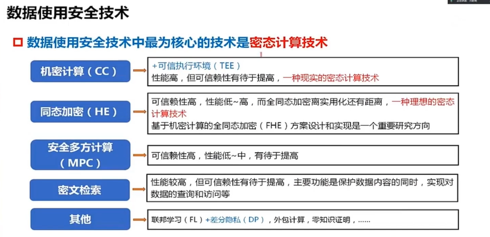
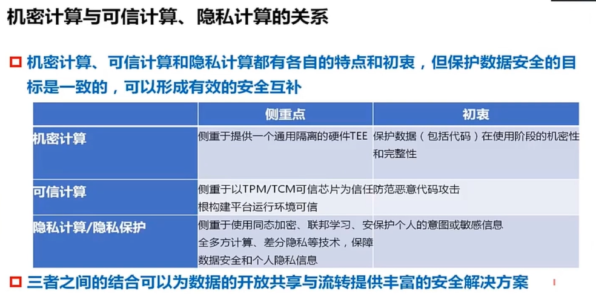
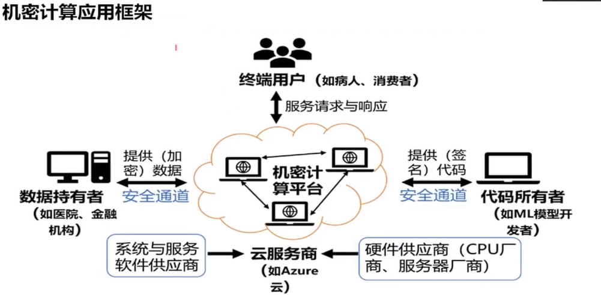
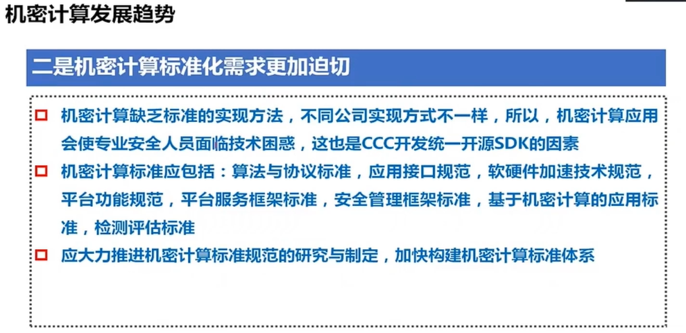

电子信息争鸣讲坛第七期-学习笔记
今天导师突然发了个链接，说可以学习这里的文章写法
第一遍我粗略的看了一下，感觉不是密码学相关的，又时代久远（2023年年底），故而简略看了看就去干别的了
今天导师问有没有人学习这个，并且总结汇报，然后我意识到这个视频的重要性。故而在学习的同时写篇博文总结一下，旨在橙味写文章糕守~

密态计算技术：最难也是最重要
本讲座的主要内容针对机密计算（也就是第一个）
机密计算：提供硬件级别的系统隔离以保证数据安全
~
看了半天，感觉确实不是密码学的，确实完全是关于机密计算的，偏硬件，值得学习的应当在于其逻辑
机密计算我真看不懂它是干啥的，我是硬件低手，下面我尽量带入密码学的角度来讲解一下如何做PPT

报告分为三个部分：机密计算是什么，现在怎么样，将来怎么样
是什么？
先介绍，机密计算很重要。符合国家战略和法律法规需求等等等等，很像写可修订区块链，讲GDPR云云

然后是三大主流方向，顺着研究背景的内容，把数据安全这个问题进行拆解，分成传输存储使用三个部分，这三者缺一不可
然后讲三个部分中，数据使用是最薄弱的，而这次分享的核心——机密计算，就是数据应用部分的。也是为了引入主题做铺垫（有一说一，第一遍看的时候真没看出来）
很顺利的引到了机密计算，并对比了其它方向（其它几个好多老熟人哇）
模仿着的，写同态和MPC都可以用前面几张PPT类似的思维，就在这张PPT把想写的移动到第一位
这一页正式介绍了机密计算的定义，但是不是直接说定义是什么（这样的话很枯燥，这一页的东西也会少很多），而是对比了各个机构对机密计算的定义，最后介绍笔者怎么想的
这种写法的普适性很强，感觉无论写什么都可以套用
上一页是下定义，那么这一页是介绍了机密加密的特征
这个“墙壁”很好的标明了机密计算做了什么，加上旁边的注解，还有芯片的logo，让大家都知道是基于硬件的安全保证，构成这样一个TEE
这个构图值得学习，如果写同态的话，可以把图片替换成密态计算的流程，右下方改成同态的特点

对比了类似的概念，直接上了表格
先区分概念，后文交代三者的联系
这么好看的PPT我这辈子都做不出来（哭
这一页是对上一页的进一步说明，前面说区别，这页说关联，是层层递进的，里面还有举了很多具体的算法的概念，最终共同服务于数据安全（这几个大小配色也搭配的很好）
大同行基本上能知道机密计算是个什么东西了，定位是在隐私计算和可信计算中间
又一页进一步补充说明关联，院士讲这一页的时候没有过多赘述，点了一下硬件基础（第一个）和隐私性（最后一个）就下一页了

画了一个时间轴，将发展历程，这种写法在可修订区块链和同态加密都可以用哇
上面的时间轴不变，下面讲不同阶段
现在怎么样？（发展现状）
直接上一张大图，介绍了各个架构部署机密计算的技术路线
这种图基本没人会去细看，其目的旨在说明自己的对比结论是翔实可靠的
直接蹦出来这张图，告诉观众结论
效仿的话，直接列一张对比的大表然后给观众结论即可，感觉其它方向都可以学
不过这个配色草率了点，不是很现代化~
体系结构，左侧是目标，右侧是指标，中间从下到上是从底层到应用
我完全想不到怎么做出这么好看的PPT~

交互过程，密码学里很常见
也是同一页，和上次那个把表格一样的弄法，先给观众看图，然后再给看字
这种弄法，基本上多数密码学算法交互流程都可以套用（科普向很强）
主要研究方向和内容，感觉基本上也是让观众看大字内容，小字不是很重要的
感觉可以改进，小字里也有很多关键部分，可以加黑
攻击手段，也是一分多的画法
然后这里介绍了一些架构，写法大致相同，可以模仿
都是多个点，一个点后面带出来具体介绍
好好看的图~
和上面很像，都是左侧一列右侧一列，中间是一大列多层级技术构成
将来怎么样？（发展趋势）

四大页PPT，虽然不是很华丽，但基本介绍了发展趋势
后面很长一段提问时间，不少也是围绕前景进行提问了
询问环节的专业性比较强（翻译：我听不懂），这里就不再赘述了
不过看起来这一块前景还不错嘞~感觉有点太硬了就是了
最后还有一点令我比较泪目：院士的电脑居然还是传统的win7，用我叫不上来名字的Office版本
天黑了，回宿舍睡觉了，早睡早起，明天蓝桥杯加油~
.gif)
.gif)
.gif)
.gif)
.gif)
.gif)
.gif)
.gif)
.gif)
.gif)
.gif)